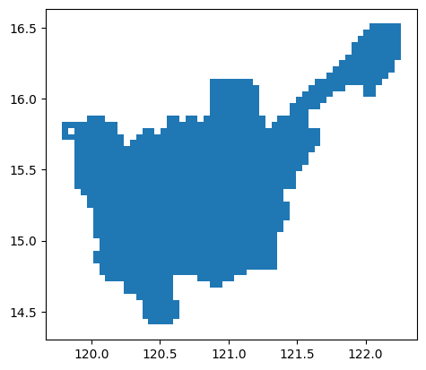
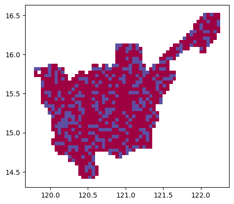

import geopandas as gpd
import numpy as np
import geowrangler.grids as grids
import geowrangler.tile_clustering as tile_clusteringTile Clustering Tutorial
A basic introduction to using tile clustering

Summary
Clusters adjacent grid tiles together. Usage of this function assumes that the input is a grid dataset.
How does it work?
Tile clustering works by assigning the same ID to grid cells belonging to the same cluster. There are options to: (a) cluster adjacent cells by category, (b) cluster grid cells via adjacent edges or corners.
TileClustering().cluster_tiles(df, category_col)
| type | default | optional/required | details | |
|---|---|---|---|---|
| cluster_type | String | four_way |
optional | Leave blank () if using four_way cluster_type (top, bottom, left, right sides of a cell). Put in eight_way if preference is to cluster via four sides and corners of a cell. |
| df | GeoDataFrame | none | required | dataframe for clustering |
| category_col | String | none | optional | column for category if need to cluster adjacent cells by category |
A technical step-by-step explanation of how TileClustering().cluster_tiles works is detailed in the cell blocks below. An example on how to use it with its arguments is shown in the sample use case section thereafter.
- Define the class.
class TileClustering:
def __init__(
self,
cluster_type: str = "four_way",
) -> None:
assert cluster_type in ["four_way", "eight_way"]
self.cluster_type = cluster_type
self.tile_cluster_col = "tile_cluster"- Define the function.
@patch
def cluster_tiles(
self: TileClustering,
df: pd.DataFrame,
grid_x_col="x",
grid_y_col="y",
category_col: Optional[str] = None,
) -> pd.DataFrame:
"""
Appends the cluster ID for each square grid cell
"""
if category_col is None:
cluster_df = self._cluster_tiles_single(df, grid_x_col, grid_y_col)
else:
assert (
not df[category_col].isnull().any()
), f"There shouldn't be null values for {category_col}"
unique_categories = df[category_col].unique().tolist()
cluster_df_list = []
for i, category in enumerate(unique_categories, start=1):
bool_mask = df[category_col] == category
filtered_df = df.loc[bool_mask, :].copy()
cluster_filtered_df = self._cluster_tiles_single(
filtered_df, grid_x_col, grid_y_col
)
cluster_filtered_df[self.tile_cluster_col] = cluster_filtered_df[
self.tile_cluster_col
].apply(lambda key: f"{key}-{i}")
cluster_df_list.append(cluster_filtered_df)
cluster_df = pd.concat(cluster_df_list, axis=0, ignore_index=True)
df = pd.merge(left=df, right=cluster_df, on=[grid_x_col, grid_y_col], how="left")
return df- Categorize commands depending on input of
category_col. Append cluster ID for each grid cell.
# no entry in category_col - run the patched function _cluster_tiles_single
if category_col is None:
cluster_df = self._cluster_tiles_single(df, grid_x_col, grid_y_col)
# entry in category_col - make sure that all rows have values
else:
assert (
not df[category_col].isnull().any()
), f"There shouldn't be null values for {category_col}"
unique_categories = df[category_col].unique().tolist()
# append cluster ID for each grid cell
cluster_df_list = []
for i, category in enumerate(unique_categories, start=1):
bool_mask = df[category_col] == category
filtered_df = df.loc[bool_mask, :].copy()
cluster_filtered_df = self._cluster_tiles_single(
filtered_df, grid_x_col, grid_y_col
)
cluster_filtered_df[self.tile_cluster_col] = cluster_filtered_df[
self.tile_cluster_col
].apply(lambda key: f"{key}-{i}")
cluster_df_list.append(cluster_filtered_df)
cluster_df = pd.concat(cluster_df_list, axis=0, ignore_index=True)- Merge grid cells with same cluster ID.
df = pd.merge(left=df, right=cluster_df, on=[grid_x_col, grid_y_col], how="left")- Return output dataframe.
return df- Other
@patchfunctions
_cluster_tiles_single - called when there is no entry in category_col
@patch
def _cluster_tiles_single(
self: TileClustering,
df: pd.DataFrame,
grid_x_col="x",
grid_y_col="y",
) -> pd.DataFrame:
"""
Performs tile clustering on a single category
"""
if self.tile_cluster_col in df.columns:
raise ValueError(
f"{self.tile_cluster_col} already exists as a column. Please rename"
)
grid_x = df[grid_x_col]
grid_y = df[grid_y_col]
self.grid_idx = set(zip(grid_x, grid_y))
self.tile_cluster_dict = {}
self.cluster_id = 0
for key in self.grid_idx:
if key not in self.tile_cluster_dict.keys():
self.cluster_id += 1
# reset the call stack per iteration
self.call_stack = deque()
self._dfs_connected_components(key)
cluster_df = pd.DataFrame.from_dict(
self.tile_cluster_dict, orient="index", columns=[self.tile_cluster_col]
)
cluster_df = cluster_df.reset_index()
cluster_df[grid_x_col] = cluster_df["index"].apply(lambda idx: idx[0])
cluster_df[grid_y_col] = cluster_df["index"].apply(lambda idx: idx[1])
cluster_df = cluster_df.drop(columns="index")
return cluster_df_get_adjacent_keys - defines how four_way and eight_way clustering works
@patch
def _get_adjacent_keys(
self: TileClustering,
key: Tuple[int, int],
) -> List[Tuple[int, int]]:
x_idx = key[0]
y_idx = key[1]
east_key = (x_idx + 1, y_idx)
west_key = (x_idx - 1, y_idx)
south_key = (x_idx, y_idx - 1)
north_key = (x_idx, y_idx + 1)
if self.cluster_type == "four_way":
adjacent_keys = [east_key, west_key, south_key, north_key]
if self.cluster_type == "eight_way":
northeast_key = (x_idx + 1, y_idx + 1)
northwest_key = (x_idx - 1, y_idx + 1)
southeast_key = (x_idx + 1, y_idx - 1)
southwest_key = (x_idx - 1, y_idx - 1)
adjacent_keys = [
east_key,
west_key,
south_key,
north_key,
northeast_key,
northwest_key,
southeast_key,
southwest_key,
]
return adjacent_keys_dfs_connected_components - a non-recursive depth-first search implementation of connected components
@patch
def _dfs_connected_components(
self: TileClustering,
key: Tuple[int, int],
) -> None:
self.call_stack.append(key)
while self.call_stack:
ref_key = self.call_stack.pop()
# check if key exists in the first place
if ref_key in self.grid_idx:
# check if adjacent key has already been assigned
if ref_key not in self.tile_cluster_dict.keys():
self.tile_cluster_dict[ref_key] = self.cluster_id
adjacent_keys = self._get_adjacent_keys(ref_key)
for adjacent_key in adjacent_keys:
self.call_stack.append(adjacent_key)Sample use case- Clustering areas based on scores
Input: - grid_gdf5k - GeoDataFrame of randomly scored 5km x 5km grid cells - class - category column for basis of of clustering
Output: - clustered grid based on class
Step 1: Import packages
Step 2: Load GeoDataFrame and generate grid
grid_generator5k = grids.SquareGridGenerator(5_000)
grid_gdf5k = grid_generator5k.generate_grid(region3_gdf)grid_gdf5k| x | y | geometry | |
|---|---|---|---|
| 0 | 7 | 8 | POLYGON ((120.10024 14.75528, 120.14516 14.755... |
| 1 | 6 | 8 | POLYGON ((120.05533 14.75528, 120.10024 14.755... |
| 2 | 9 | 8 | POLYGON ((120.19008 14.75528, 120.23499 14.755... |
| 3 | 2 | 24 | POLYGON ((119.87566 15.4491, 119.92058 15.4491... |
| 4 | 2 | 25 | POLYGON ((119.87566 15.49239, 119.92058 15.492... |
| ... | ... | ... | ... |
| 1069 | 54 | 44 | POLYGON ((122.21128 16.31312, 122.2562 16.3131... |
| 1070 | 54 | 45 | POLYGON ((122.21128 16.35623, 122.2562 16.3562... |
| 1071 | 54 | 46 | POLYGON ((122.21128 16.39932, 122.2562 16.3993... |
| 1072 | 54 | 47 | POLYGON ((122.21128 16.4424, 122.2562 16.4424,... |
| 1073 | 54 | 48 | POLYGON ((122.21128 16.48548, 122.2562 16.4854... |
1074 rows × 3 columns
grid_gdf5k.plot();
Step 3: Assign scores
grid_gdf5k| x | y | geometry | score | class | |
|---|---|---|---|---|---|
| 0 | 7 | 8 | POLYGON ((120.10024 14.75528, 120.14516 14.755... | 0.216056 | False |
| 1 | 6 | 8 | POLYGON ((120.05533 14.75528, 120.10024 14.755... | 0.198387 | False |
| 2 | 9 | 8 | POLYGON ((120.19008 14.75528, 120.23499 14.755... | 0.508601 | False |
| 3 | 2 | 24 | POLYGON ((119.87566 15.4491, 119.92058 15.4491... | 0.186705 | False |
| 4 | 2 | 25 | POLYGON ((119.87566 15.49239, 119.92058 15.492... | 0.383824 | False |
| ... | ... | ... | ... | ... | ... |
| 1069 | 54 | 44 | POLYGON ((122.21128 16.31312, 122.2562 16.3131... | 0.059555 | False |
| 1070 | 54 | 45 | POLYGON ((122.21128 16.35623, 122.2562 16.3562... | 0.824039 | True |
| 1071 | 54 | 46 | POLYGON ((122.21128 16.39932, 122.2562 16.3993... | 0.903166 | True |
| 1072 | 54 | 47 | POLYGON ((122.21128 16.4424, 122.2562 16.4424,... | 0.186872 | False |
| 1073 | 54 | 48 | POLYGON ((122.21128 16.48548, 122.2562 16.4854... | 0.208694 | False |
1074 rows × 5 columns
Step 4: Tile clustering
output = tile_clustering.TileClustering().cluster_tiles(
df=grid_gdf5k, category_col="class"
)output| x | y | geometry | score | class | tile_cluster | |
|---|---|---|---|---|---|---|
| 0 | 7 | 8 | POLYGON ((120.10024 14.75528, 120.14516 14.755... | 0.216056 | False | 1-1 |
| 1 | 6 | 8 | POLYGON ((120.05533 14.75528, 120.10024 14.755... | 0.198387 | False | 1-1 |
| 2 | 9 | 8 | POLYGON ((120.19008 14.75528, 120.23499 14.755... | 0.508601 | False | 1-1 |
| 3 | 2 | 24 | POLYGON ((119.87566 15.4491, 119.92058 15.4491... | 0.186705 | False | 1-1 |
| 4 | 2 | 25 | POLYGON ((119.87566 15.49239, 119.92058 15.492... | 0.383824 | False | 1-1 |
| ... | ... | ... | ... | ... | ... | ... |
| 1069 | 54 | 44 | POLYGON ((122.21128 16.31312, 122.2562 16.3131... | 0.059555 | False | 2-1 |
| 1070 | 54 | 45 | POLYGON ((122.21128 16.35623, 122.2562 16.3562... | 0.824039 | True | 33-2 |
| 1071 | 54 | 46 | POLYGON ((122.21128 16.39932, 122.2562 16.3993... | 0.903166 | True | 33-2 |
| 1072 | 54 | 47 | POLYGON ((122.21128 16.4424, 122.2562 16.4424,... | 0.186872 | False | 2-1 |
| 1073 | 54 | 48 | POLYGON ((122.21128 16.48548, 122.2562 16.4854... | 0.208694 | False | 2-1 |
1074 rows × 6 columns
output.plot(column="class", categorical=True, cmap="Spectral");